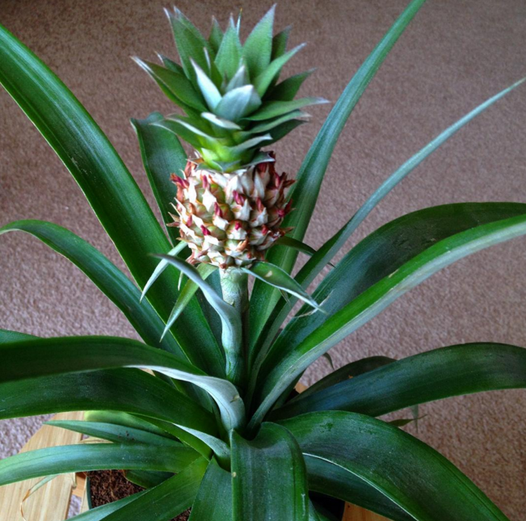
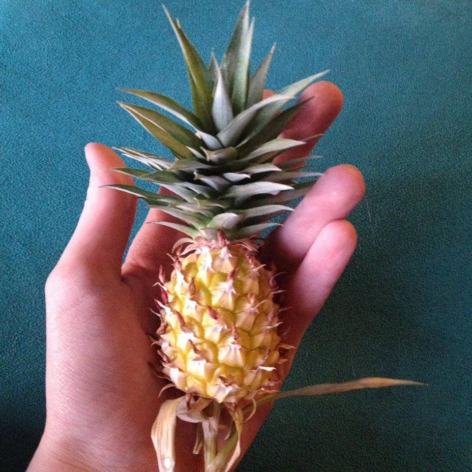
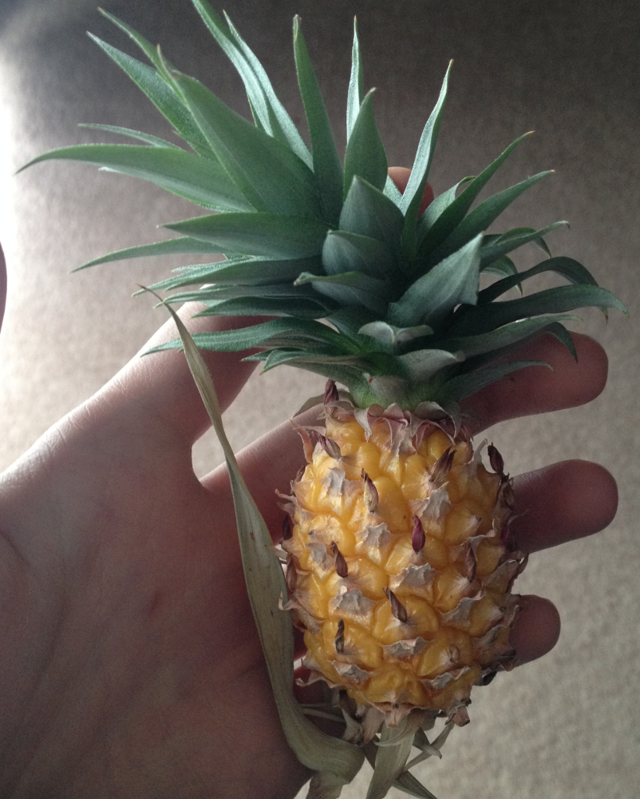
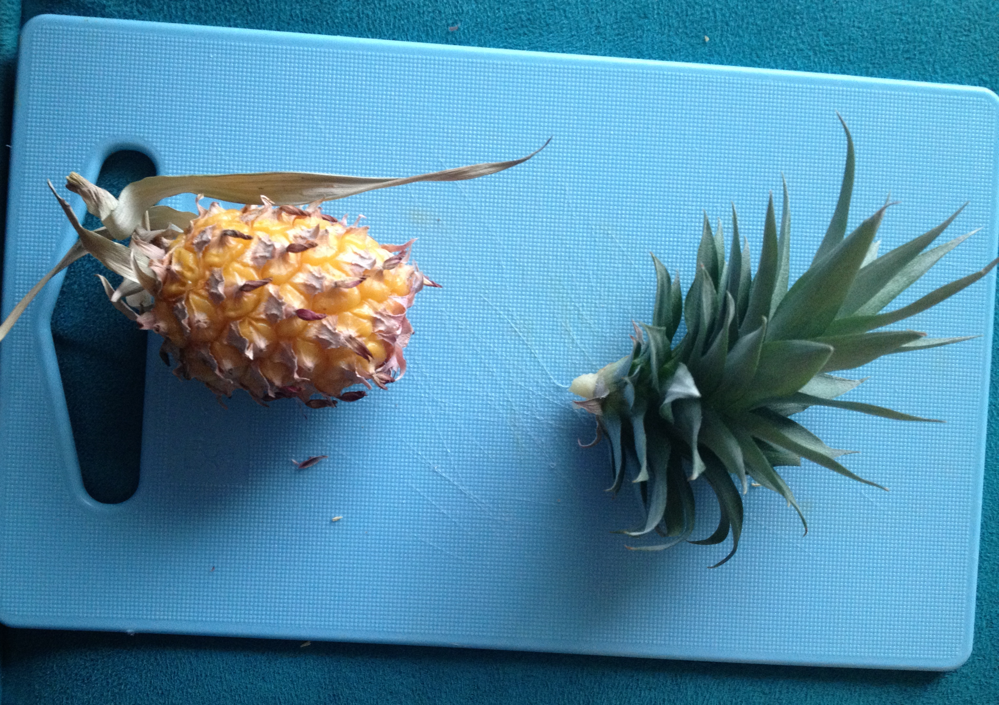
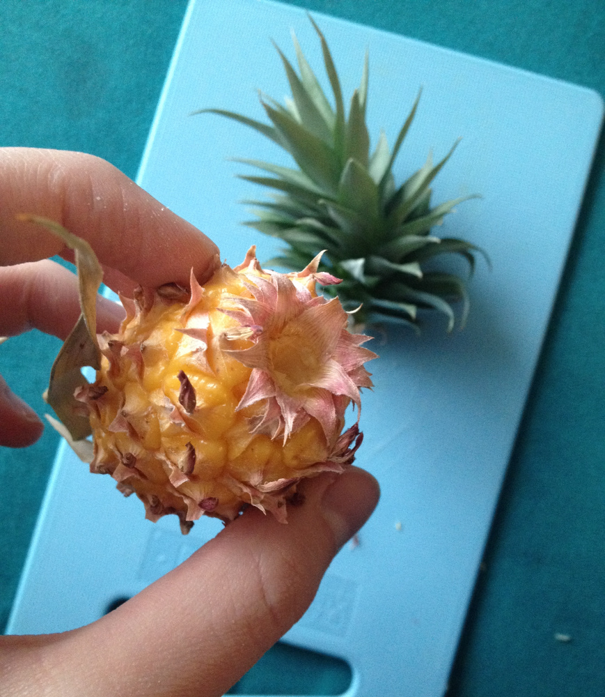
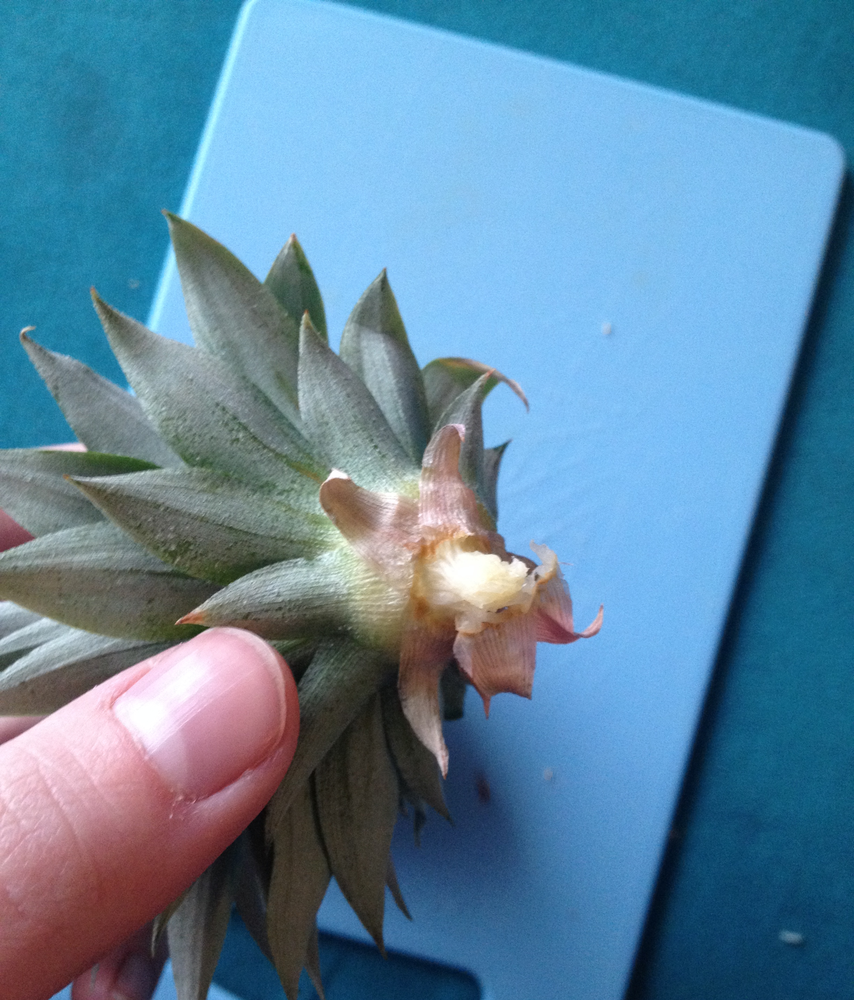
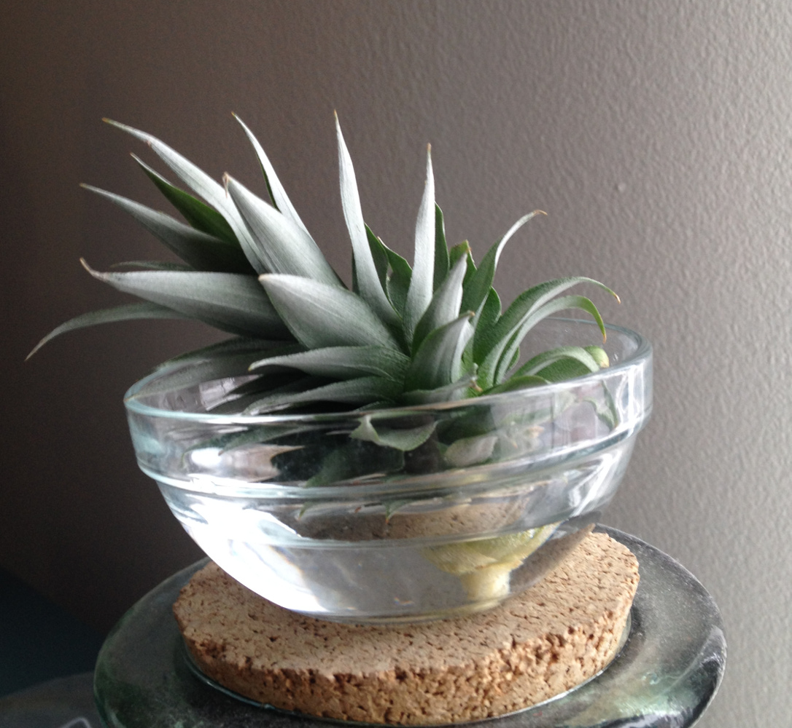
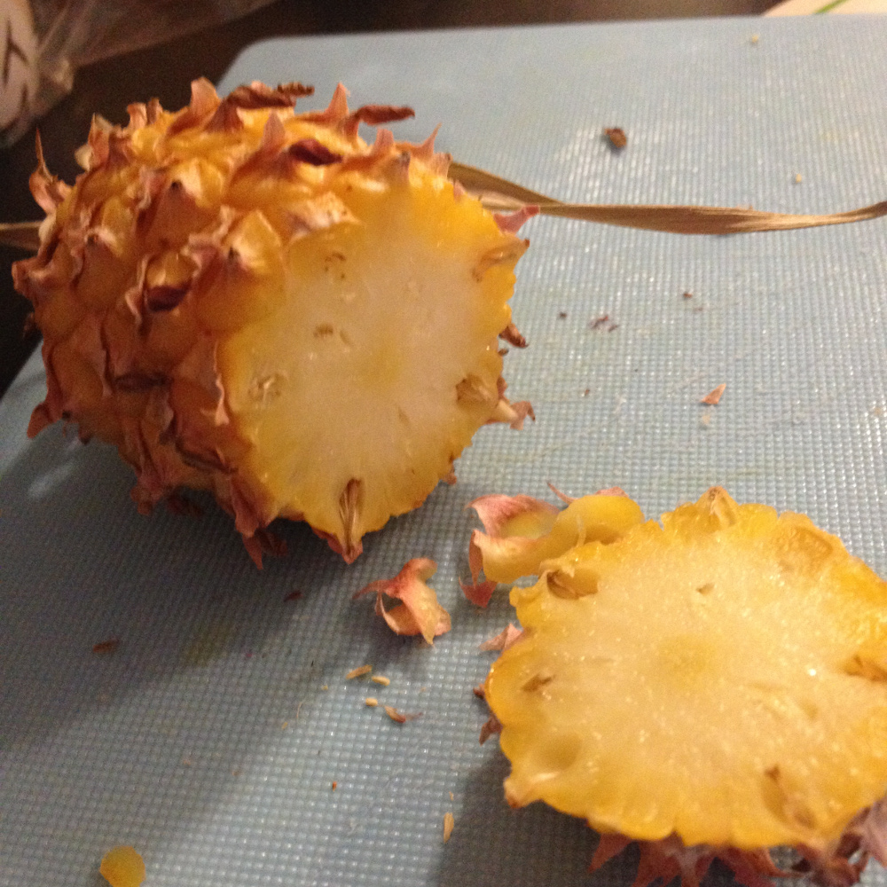
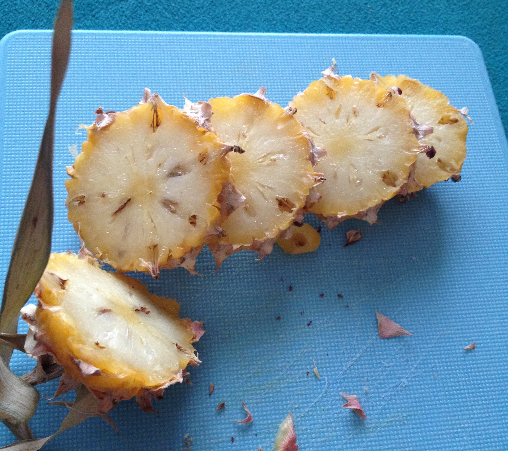
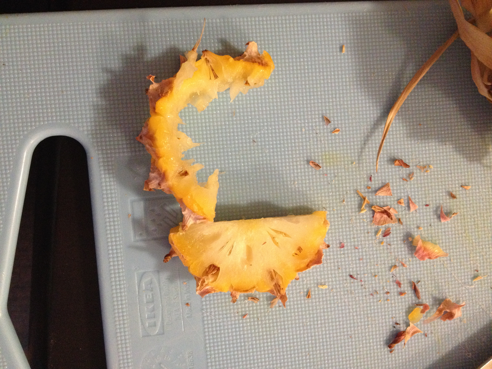

Last September, I went to Ikea and saw that they were selling potted pineapple plants. Even though I already had 9 house plants in my apartment, I had to have it. I quickly Googled information about indoor potted pineapple plants and found out that they were actually pretty low maintenance, so I came home with this:
The tiny pineapple was only a few inches tall. For the next several months, I watered it once every week or two. Eventually the pineapple grew too heavy for the stalk so the stalk bowed, and then eventually died. I finally picked the pineapple.
The leaves at the top had grown sideways a bit (visible in later images) because it grew pretty quickly while the stalk had bowed, so the top didn't continue to grow straight. I waited until the pineapple had ripened and smelled really sweet before preparing it for eating and also rooting the top to make another pineapple plant. It also turned much more yellow:
To remove the leaves, I simply twisted the top, and it came right off.


I pulled off the dead looking leaves from the top, and placed it in water. Every day until it grows roots, I'll replace the water so that the attached bit of fruit doesn't begin to rot. When the roots get to be 1/4" or so, I'll plant it in soil. I placed it near a window with the leaves facing away from the window, thinking maybe then the plant will straighten out a bit. I guess we'll see.
Next I cut the pineapple and ate it. Since the pineapple was so tiny, I accidentally ate some of the hair things, and the texture was a bit different than a larger pineapple. However, the pineapple was so sweet and strong tasting, I'd never tasted a pineapple like it before.


It will be about two years before this plant grows a pineapple fruit. However, my existing pineapple plant will continue to grow about one pineapple every year.
Questions? Comments? Don't hesitate to contact me!